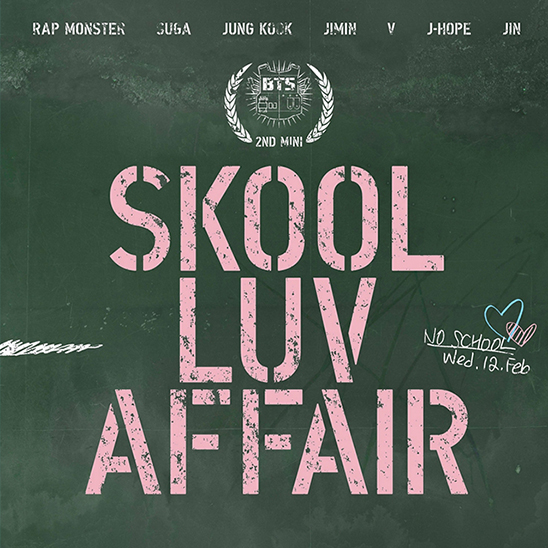
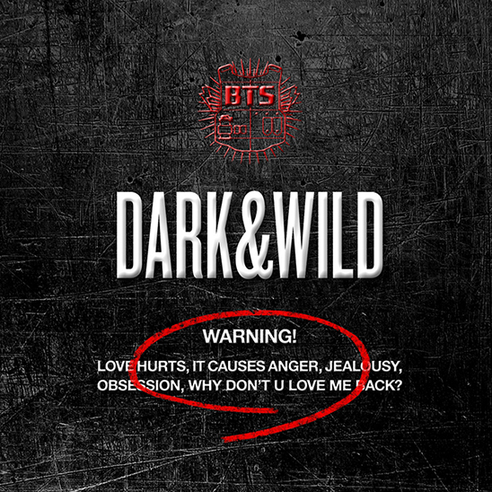

Up until this point, BTS’ brand was built on aggressive hip hop and displays of masculinity. To express the beauty and angst of “youth” in their next EP, The Most Beautiful Moment in Life, Part 1, they diversified to pop and EDM and switched up their fashion to match. The music video for “I Need U” marks the beginning of BTS Universe, a coming of age storyline about friendship, love and loss that would continue in future music videos. Fans enjoyed dissecting, understanding and connecting the dots of these plot points and discussing them with each other. Personally, I think creating their own cinematic universe was one of the smartest moves they ever made; it added depth and meaning and kept fans coming back for more. BTS Universe would later go on to become a webtoon and mobile game and is currently in production as a kdrama.
In August, they started Run BTS, a variety series broadcasted on the web where the members play games and complete challenges for rewards or penalties. This resulted in fans making memes of the show and forming friendships with each other through their shared interest. The company wanted BTS to feel relatable rather than out-of-reach stars. This was additionally achieved through livestreams, brief vlogs on Youtube and their Bon Voyage series documenting their yearly vacations together. This content resulted in community building that would prove integral to BTS’ success.

Won Rookie of the Year at the Golden Disc Awards.
Won Best New Artist at the Seoul Music Awards.
Held their first European show and fanmeeting.
Began The Red Bullet Tour performing in halls and theaters in Seoul, Kobe, Tokyo, Manila, Singapore, and Bangkok.
Released Wake Up, their first of many Japanese albums.
|  | |
|---|---|
| 2nd Mini Album | Skool Luv Affair |
| Genres | Hip hop · R&B · Dance-pop · Pop |
| About | The second of the “School Trilogy” project that discusses topics teens their age are most interested in such as dreams, happiness and love. |
|  | |
|---|---|
| 1st Full Length Album | Dark & Wild |
| Genres | Hip hop · R&B · Dance-pop · Pop |
| About | BTS sings about love gone awry and the many conflicting emotions of young love. |